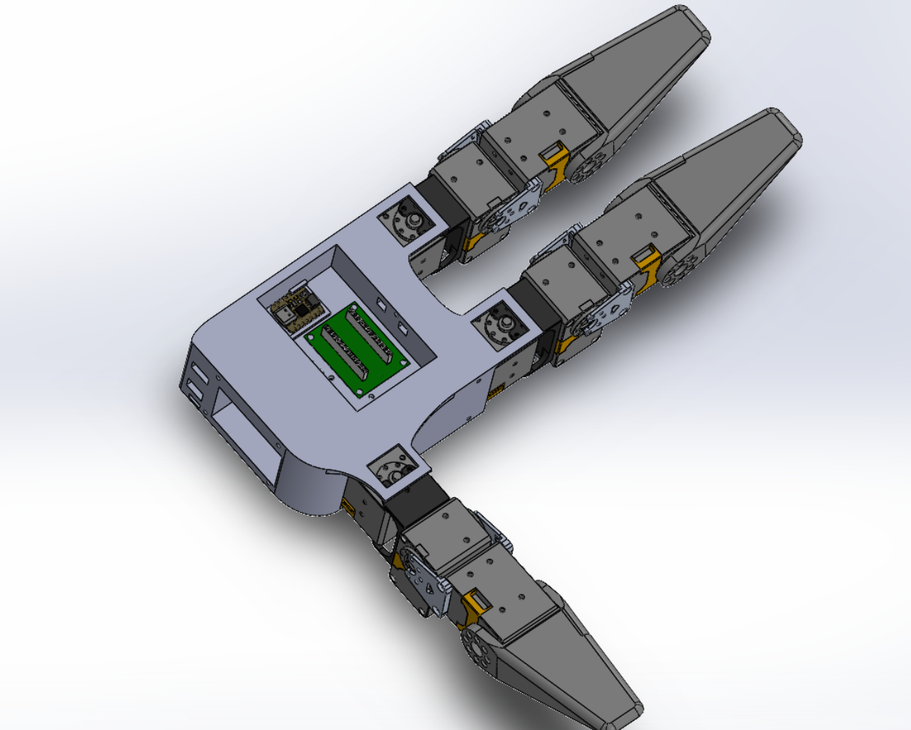

Facebook AI Research Internship
My work during the 2021 summer with Facebook AI Research and Carnegie Mellon's Robotics Institute

My work during the 2021 summer with Facebook AI Research and Carnegie Mellon's Robotics Institute
Update: The paper has been released! You can check out more info on the design and testing of the hand Here

I spent the 2021 summer working with Tess Hellebrekers and Vikash Kumar on Facebook AI Research’s (FAIR) D’Manus robotic hand. The D’Manus hand is intended as a cost-effective dexterous manipulator with the goal of enabling 24/7 testing on algorithms and processes for manipulation enabling faster iteration. Ultimately, FAIR was hoping to make the hand open-source so my work consisted of a variety of tasks related to these objectives.
My first task was the creation of documentation for the existing hand. I was given a CAD model and some photos of the assembled hand, as well as the assorted motors and electronics necessary for it to work and set loose to assemble one of my own. The advantage here was that I had zero bias on how the hand should be assembled and I noted a few locations of redundancy in my assembly process as well as some other elements that were optimizeable with regard to assembly.
While creating an assembly guide for the existing hand design, I noted and implemented whatever small changes might be useful - think widening mounting points and changing screw sizes to simplify the assembly. I also kept a record of points of frustration that could be improved upon in further hand design iterations.
One of the goals for the D’Manus hand was to include capacitive force sensors on all of the fingers. This would allow for more complex manipulation tasks, if the configuration of the object could be determined while in the hand. The secondary goal with regard to the sensors was to include a larger one across the palm with several regions of detection further increasing the fidelity of potential hand pose detection attempts.
To assist with this I designed and built a test rig to compare differet materials and adhesives for use in the manufacturing of the sensors. The rig was designed for three tests: a normal force test repeatedly tapping the sensor against a surface, a shear force test, dragging the sensor along a surface and a third test dragging the sensor through an object like sand or coffee beans.
I also collected over 24 hours of testing data to validate sensor performance in the shear and normal testing configurations. The preliminary results were not enough to draw any conclusions, so further testing is being completed.
Based on my experience with assembling the palm, as well as the overarching goals of increasing hand mobility, and reducing manufacture time, I redesigned the palm skeleton. Starting from the four necessitated motor mount points I scaled up the palm, keeping in mind wiring, internal electronics and the limitations and benefits of 3d printing. Ultimately, the redesigned hand increased the electronics bay by 2%, reduced the overall footprint by 20%, reduced total volume by 14% and increased the ease of wiring, by partitioning sensing and actuating electronics and including wiring channels. I also made sure not to sacrifice aesthestis too much in optimizing for other factors to ensure that the hand was still reminiscent of a hand.
The experience I had with D’Manus was definitely an enjoyable one. The people I worked with were very helpful and made the objectives and rationales very clear. They were always willing to provide feedback and gave ample oppourtunities for me to learn. The work was also very interesting in that it allowed me to interact with several different disciplines. I was responsible for the mechanical design of the rig, but also the software that ran the tests, collected and analyzed the data. I got experience with low level programming for sensor interaction and pulling that data up to a higher level to allow for simpler analysis.